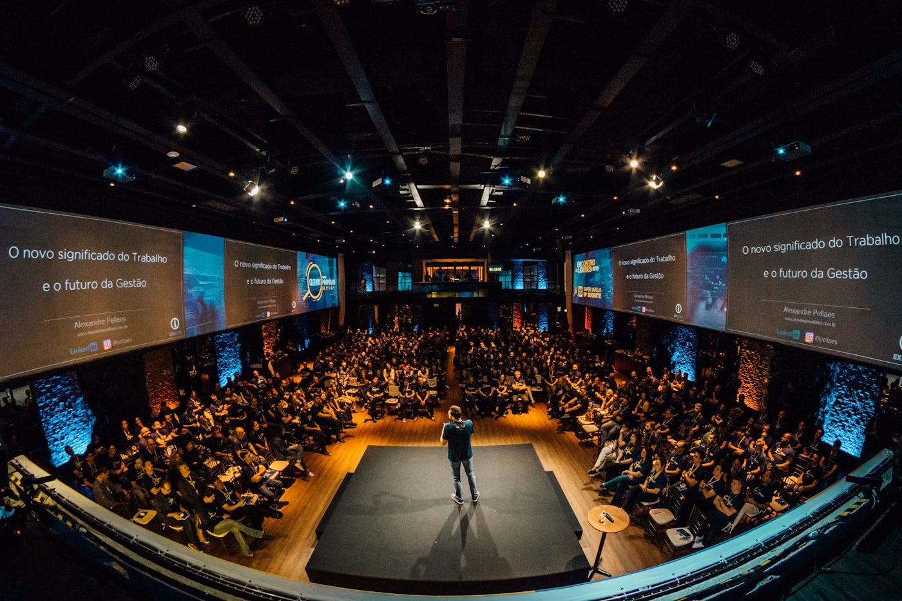
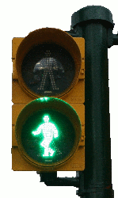
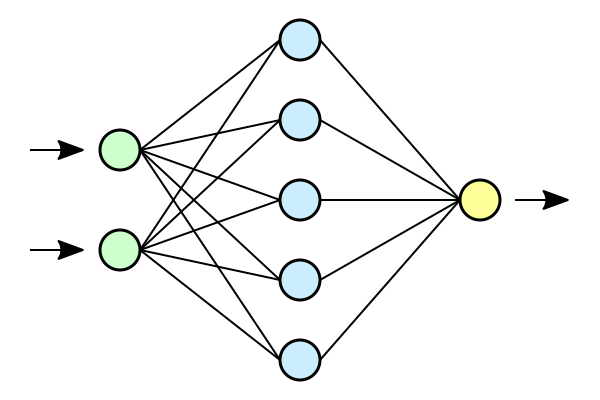
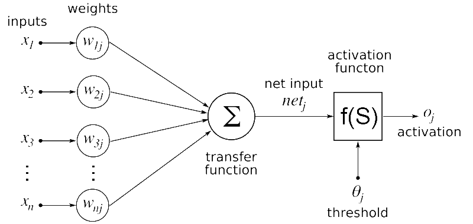
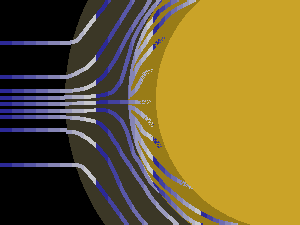

From “AI” to LLMs
A colorful, beginner-friendly journey — with hands-on labs along the way.
We’ll connect everyday apps → machine learning → deep learning → generative AI → tokens & transformers.
Models are already everywhere

If it ranks, routes, completes, recommends, or blocks spam — there’s usually a model behind the curtain.
Today’s thread
- What “AI” means (wide umbrella)
- What makes machine learning different from fixed rules
- What a saved model is in practice
- Why deep learning and generative AI exploded recently
- How LLMs relate to tokens + next-token prediction
Lab A — “AI or not?” sort
Goal: separate mostly-rules vs mostly-learned systems.
- Materials: sticky notes or a whiteboard column for each category.
- Repo: none — discussion only.
- Done when: the room agrees “learned from data + feedback” is the hallmark of ML.
Example: traffic lights

Artificial intelligence (wide lens)

Two families you’ll hear about
- Rule-heavy: explicit if-this-then-that logic (great when requirements are stable).
- Data-heavy (ML): behavior is shaped by examples, evaluation, and iteration.
- Real products often mix both — the question is where the uncertainty lives.
The machine learning loop

Train vs test (intuition)
- Training: adjust internal knobs to fit examples you’re allowed to learn from.
- Testing / held-out: check behavior on fresh examples you didn’t train on.
- If you only ever grade on homework you memorized, you don’t know if you generalize.
Overfitting (one slide)
A model can become too faithful to training quirks — great on yesterday’s data, brittle tomorrow. Regularization, more diverse data, and honest evaluation help.
Lab B — “Guess the rule”
Goal: feel why a held-out set matters.
- Facilitator presents 5–8 toy labeled examples (words, emojis, silly patterns).
- Groups propose a rule, then see held-out cases meant to break naive rules.
- Done when: learners can name training set, hypothesis, and why test matters.
Train / validation / test

What we mean by “model”
- Architecture / family: the blueprint (what is wired to what).
- Weights / parameters: numbers learned from data — the “memory” of training.
- Artifact: the saved file(s) you version, deploy, and monitor.
Domain example — inbox & spam
Domain example — risk & signals

Domain example — vision & cameras
Domain example — recommendations
Lab C — “Name the model” scavenger
Goal: for 2–3 apps: name input, output, and whether it’s generative.
- Optional twist: find one experience that is clearly next-step prediction (keyboard, IDE).
- Done when: pairs can explain one chain in plain language.
Phones are full of tiny predictors
Deep learning

Composable blocks (cartoon)
This repo’s later labs turn text → tokens → vectors → attention inside those blocks.
When depth shines

Generative AI
- Discriminative models lean toward labels, scores, or decisions.
- Generative models synthesize new samples in media space (text, images, audio, …).
- Responsible use still needs policy, testing, and human review — especially in high-stakes settings.
Side-by-side intuition
Large language models
- Text is chunked into tokens (words, subwords, symbols).
- Training objective (simplified): predict a plausible next token given context.
- At inference: sample/decode repeatedly → paragraphs, code, plans.
Tokenization (schematic)
You’ll open real tokenizers in day1_building_transformer/tokenizer/ during Lab D.
Limits to name out loud
- Hallucination / plausible-but-wrong answers
- Knowledge cutoff & missing private context
- Not a database — don’t treat outputs as ground truth without verification
Transformer block (visual only)
day1_building_transformer/self_attention/README.md after the conceptual pass.Lab D — Tokenizer (code)
- Repo path:
day1_building_transformer/tokenizer/ - Run
simple_tokenizer.pyor importTokenizeron learner-provided sentences. - Done when: padded encodings decode sensibly; learners explain
<PAD>/<UNK>in their own words.
Neutral terminal vibe
From concepts to this repo
Raw text
→ Tokenizer (ids, padding)
→ Embeddings (rows = tokens)
→ Self-attention (Q/K/V)
→ Blocks / LM head
→ Next-token predictionExtend experiments in day1_building_transformer/ — tokenizer variants, embedding shapes, attention blocks.
Lab E — Embeddings
- Path:
day1_building_transformer/embeddings/+ README - Inspect embedding rows/columns with
np_embedding.py. - Done when: learners can say why networks need numbers, not raw strings.
Lab F — Self-attention
- Path:
day1_building_transformer/self_attention/+ README - Walk through Q/K/V intuition with the NumPy scratch steps.
- Done when: one disambiguation story (“it” → “bank”) uses context, not magic.
Nesting map
AI (perceive / decide / act)
⊃ Machine learning (fit from data)
⊃ Deep learning (deep composable stacks)
+ Generative branch (synthesize media)
⊃ LLMs (language-scale autoregressive models)
Pick one track to deepen next: tokenizer tricks, embedding experiments, or attention visualizations.
Thank you / Q&A
Media credits: ATTRIBUTIONS.md in this folder.